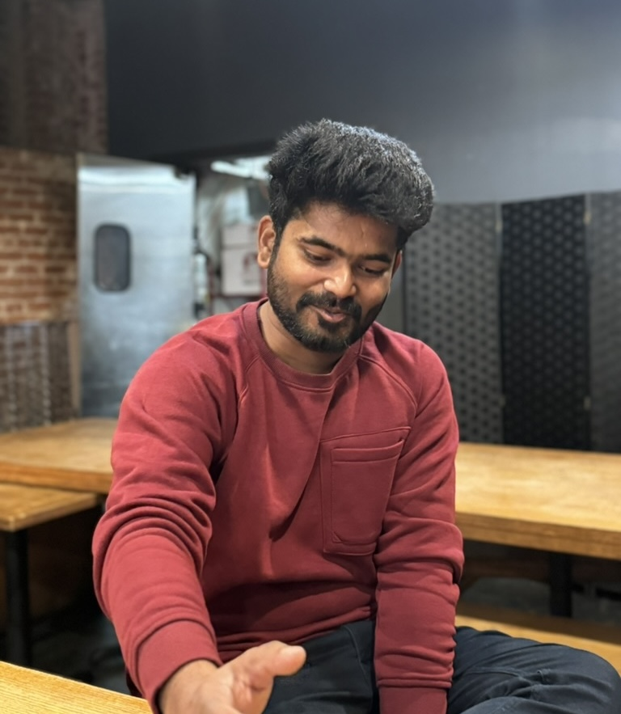

Data Engineering
Batch and automated pipelines, data quality checks, deduplication logic, common data models, and large SQL/PySpark workflows.
This page collects the deeper profile: how I think about AI engineering, the stack I work across, and the roles that shaped the way I build.
I engineer the infrastructure around AI: retrieval quality, document intelligence, evaluation loops, data contracts, and backend systems that make model outputs reliable enough for real users.
I am a USC Computer Science alumnus and AI/Data Engineer building systems across NLP text mining, RAG-ready document processing, computer vision, graph analytics, and production APIs. My focus is the hard layer between model demos and real products: clean context, trusted data, resilient services, and measurable outputs.
I am learning Spanish as a experience indicating a small signal of curiosity, consistency, and better communication. The Ask Sajid chat now welcomes questions in English or Spanish.
My strongest work connects engineering execution with data-driven decision making: instrumenting pipelines, cleaning and joining imperfect datasets, exposing analysis through APIs, and building enough automation that teams can trust the workflow.
Batch and automated pipelines, data quality checks, deduplication logic, common data models, and large SQL/PySpark workflows.
Predictive models, feature engineering, fuzzy matching, similarity scoring, graph analytics, and object detection prototypes.
API design, modular services, database modeling, auth, third-party integrations, and deployment workflows for product teams.
Python, Java, SQL, TypeScript, JavaScript, PHP
PySpark, Databricks, Pandas, PostgreSQL, MySQL, AWS RDS, Tableau
AWS Lambda, Glue, Step Functions, MWAA, EC2, S3, Docker, Jenkins, Kubernetes, Git
A focused view of the roles that shaped my AI, data, and backend engineering practice. The full resume includes additional leadership and service experience.
VISIC, SF Bay Area
Architecting backend services from scratch, including REST APIs, database schemas, authentication, integrations, and deployment workflows for an early-stage product team.
USC Facilities Planning Management
Kognitic, Inc.
Automated structured clinical-trials data pipelines with AWS Glue, Lambda, and Step Functions, reducing manual intervention by 80% while improving duplicate detection and data consistency.
USC Thomas Lord Department of Computer Science
Built actor-based distributed query-engine components with Java and Apache Pekko for graph analytics workloads, including registry-driven actor discovery, streaming operators, and benchmark flows.
ZS Associates
Delivered Flask, SQL, PySpark, Databricks, and AWS automation for enterprise data products, optimizing 100M+ record data marts and reducing legacy analytical turnaround time by up to 90%.
DeeDee Labs Private Limited
Jobmosis / LitmusBox
